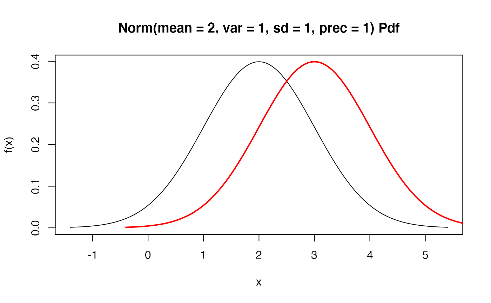

R/lines.R
lines.Distribution.RdOne of six plots can be selected to be superimposed in the plotting window, including: pdf, cdf, quantile, survival, hazard and cumulative hazard.
# S3 method for Distribution lines(x, fun, npoints = 3000, ...)
| x |
|
|---|---|
| fun | vector of functions to plot, one or more of: "pdf","cdf","quantile", "survival", "hazard", and "cumhazard"; partial matching available. |
| npoints | number of evaluation points. |
| ... | graphical parameters. |
Unlike the plot.Distribution function, no internal checks are performed
to ensure that the added plot makes sense in the context of the current plotting window.
Therefore this function assumes that the current plot is of the same value support, see examples.
plot.Distribution for plotting a distr6 object.
Chengyang Gao, Runlong Yu and Shuhan Liu
if (FALSE) { # The code below gives examples of how not to use this function. # Different value supports plot(Binomial$new(), "cdf") lines(Normal$new(), "cdf") # Different functions plot(Binomial$new(), "pdf") lines(Binomial$new(), "cdf") # Too many functions plot(Binomial$new(), c("pdf", "cdf")) lines(Binomial$new(), "cdf") }